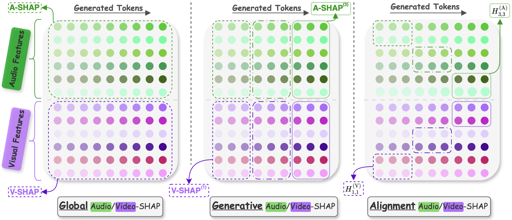

A Shapley-based framework revealing how audio-visual speech recognition models balance what they hear and what they see — across noise levels, decoding stages, and architectures.
A unified framework for understanding how AVSR models balance audio and visual modalities via Shapley values.
From the Shapley matrix Φ, capturing each input feature's contribution to each generated token, we derive three complementary metrics.
Aggregates contributions across all features and tokens to quantify overall audio vs. visual balance.
Tracks how modality reliance evolves across windowed stages of autoregressive decoding.
Examines temporal correspondence between input feature positions and output token positions.

Place your method overview figure at: figures/fig2_method.pngWe evaluate models spanning both LLM-based and encoder-decoder AVSR architectures on LRS2 and LRS3. Hover over a model to see its architecture.
From analyzing modality contributions across six state-of-the-art AVSR models on LRS2 and LRS3. Hover over each finding to explore the corresponding result.